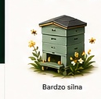
Bardzo silnabardzo_silna/assets/bgapiary-reference/hives/bardzo_silna.pngTechniczny podgląd grafik używanych w motywie Visual Polish. To nie jest moduł aplikacji dla użytkownika, tylko kontrola assetów w source.

Bardzo silnabardzo_silna/assets/bgapiary-reference/hives/bardzo_silna.png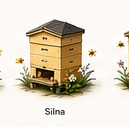
Silnasilna/assets/bgapiary-reference/hives/silna.png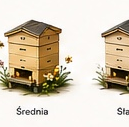
Średniasrednia/assets/bgapiary-reference/hives/srednia.png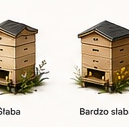
Słabaslaba/assets/bgapiary-reference/hives/slaba.png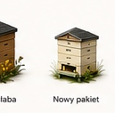
Bardzo słababardzo_slaba/assets/bgapiary-reference/hives/bardzo_slaba.png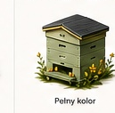
Nowy pakietnowy_pakiet/assets/bgapiary-reference/hives/nowy_pakiet.png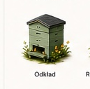
Odkładodklad/assets/bgapiary-reference/hives/odklad.png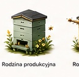
Rodzina produkcyjnarodzina_produkcyjna/assets/bgapiary-reference/hives/rodzina_produkcyjna.png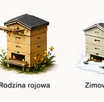
Rodzina rojowarodzina_rojowa/assets/bgapiary-reference/hives/rodzina_rojowa.png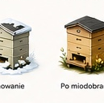
Zimowaniezimowanie/assets/bgapiary-reference/hives/zimowanie.png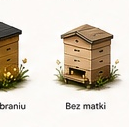
Po miodobraniupo_miodobraniu/assets/bgapiary-reference/hives/po_miodobraniu.png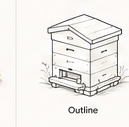
Bez matkibez_matki/assets/bgapiary-reference/hives/bez_matki.png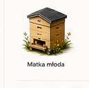
Matka młodamatka_mloda/assets/bgapiary-reference/hives/matka_mloda.png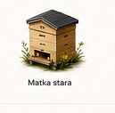
Matka staramatka_stara/assets/bgapiary-reference/hives/matka_stara.png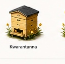
Kwarantannakwarantanna/assets/bgapiary-reference/hives/kwarantanna.png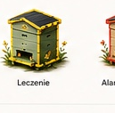
Leczenieleczenie/assets/bgapiary-reference/hives/leczenie.png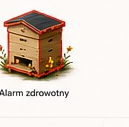
Alarm zdrowotnyalarm_zdrowotny/assets/bgapiary-reference/hives/alarm_zdrowotny.png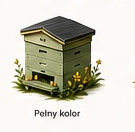
Pełny kolorvariant_pelny_kolor/assets/bgapiary-reference/hives/variant_pelny_kolor.png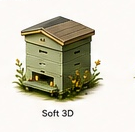
Soft 3Dvariant_soft_3d/assets/bgapiary-reference/hives/variant_soft_3d.png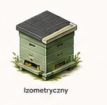
Izometrycznyvariant_izometryczny/assets/bgapiary-reference/hives/variant_izometryczny.png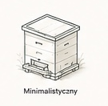
Minimalistycznyvariant_minimalistyczny/assets/bgapiary-reference/hives/variant_minimalistyczny.png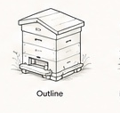
Outlinevariant_outline/assets/bgapiary-reference/hives/variant_outline.png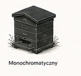
Monochromatycznyvariant_monochromatyczny/assets/bgapiary-reference/hives/variant_monochromatyczny.png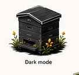
Dark modevariant_dark_mode/assets/bgapiary-reference/hives/variant_dark_mode.png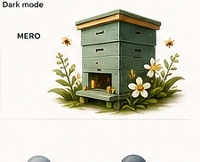
Hero ulvariant_hero_ul/assets/bgapiary-reference/hives/variant_hero_ul.png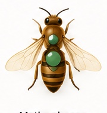
Matka obecnamatka_obecna/assets/bgapiary-reference/queens/matka_obecna.png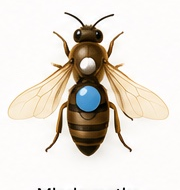
Młoda matkamloda_matka/assets/bgapiary-reference/queens/mloda_matka.png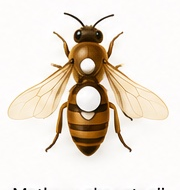
Matka w akceptacjimatka_w_akceptacji/assets/bgapiary-reference/queens/matka_w_akceptacji.png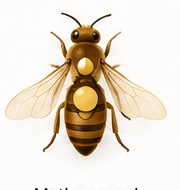
Matka czerwimatka_czerwi/assets/bgapiary-reference/queens/matka_czerwi.png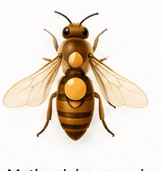
Matka słabo czerwimatka_slabo_czerwi/assets/bgapiary-reference/queens/matka_slabo_czerwi.png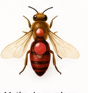
Matka do wymianymatka_do_wymiany/assets/bgapiary-reference/queens/matka_do_wymiany.png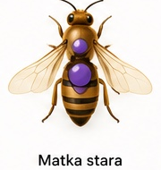
Matka staramatka_stara/assets/bgapiary-reference/queens/matka_stara.png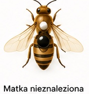
Matka nieznalezionamatka_nieznaleziona/assets/bgapiary-reference/queens/matka_nieznaleziona.png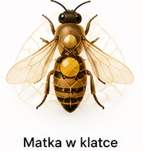
Matka w klatcematka_w_klatce/assets/bgapiary-reference/queens/matka_w_klatce.png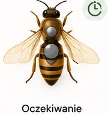
Oczekiwanieoczekiwanie/assets/bgapiary-reference/queens/oczekiwanie.png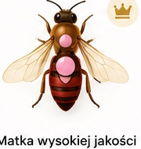
Matka wysokiej jakościmatka_wysokiej_jakosci/assets/bgapiary-reference/queens/matka_wysokiej_jakosci.png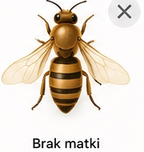
Brak matkibrak_matki/assets/bgapiary-reference/queens/brak_matki.pngok/assets/bgapiary-reference/status/ok.png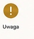
Uwagauwaga/assets/bgapiary-reference/status/uwaga.png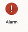
Alarmalarm/assets/bgapiary-reference/status/alarm.png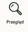
Przeglądprzeglad/assets/bgapiary-reference/status/przeglad.png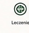
Leczenieleczenie/assets/bgapiary-reference/status/leczenie.png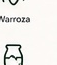
Warrozawarroza/assets/bgapiary-reference/status/warroza.png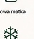
Nowa matkanowa_matka/assets/bgapiary-reference/status/nowa_matka.png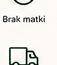
Brak matkibrak_matki/assets/bgapiary-reference/status/brak_matki.png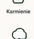
Karmieniekarmienie/assets/bgapiary-reference/status/karmienie.png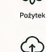
Pożytekpozytek/assets/bgapiary-reference/status/pozytek.pngmiod/assets/bgapiary-reference/status/miod.png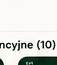
Zimowaniezimowanie/assets/bgapiary-reference/status/zimowanie.pngtransport/assets/bgapiary-reference/status/transport.pngsynchronizacja/assets/bgapiary-reference/status/synchronizacja.pngbackup/assets/bgapiary-reference/status/backup.png